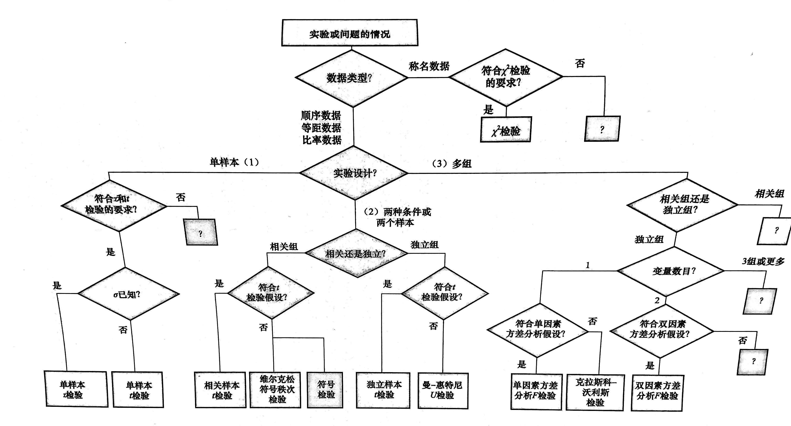

《心理学统计》小结
单样本设计
单样本的z检验
统计量计算公式：\(z_{obt}=\frac{\overline{X}_{obt}-\mu}{\sigma/\sqrt{N}}\).
判断标准：如果\(|z_{obt}| \geq |z_{crit}|\)，拒绝\(H_0\).
单样本的t检验
统计量计算公式：\(t_{obt}=\frac{\overline{X}_{obt}-\mu}{s/\sqrt{N}}\)或\(t_{obt}=\frac{\overline{X}_{obt}-\mu}{\sqrt{\frac{SS}{N(N-1)}}}\).
判断标准：如果\(|t_{obt}| \geq |t_{crit}|\)，拒绝\(H_0\).
皮尔逊相关系数的显著性(t)检验
统计量计算公式：\(r_{obt}\)，对应的\(t\)统计量为\(t_{obt}=\frac{r_{obt}-\rho}{\sqrt{\frac{1-r^2_{obt}}{N-2}}}\).
判断标准：如果\(|r_{obt}| \geq |r_{crit}|\)，拒绝\(H_0\).
相关样本设计：两个样本
相关样本的t检验
统计量计算公式：\(t_{obt}=\frac{\overline{D}_{obt}-\mu_D}{\sqrt{\frac{SS_D}{N(N-1)}}}\).
判断标准：如果\(|t_{obt}| \geq |t_{crit}|\)，拒绝\(H_0\).
效应量\(Cohen\;d = \frac{|平均差|}{总体标准差}\)，此为效应量的一般公式。对于相关样本t检验而言，其定义公式为\(d=\frac{|\overline{D}_{obt}|}{\sigma_D}\)，其计算公式为\(\hat{d}=\frac{|\overline{D}_{obt}|}{s_D}\)，式中\(\hat{d}\)是d的估计；\(|\overline{D}_{obt}|\)是差数样本平均数的绝对值；\(s_D\)是差数样本的标准差。
维尔克松配对符号秩次检验
统计量计算公式：\(T_{obt}\).
判断标准：如果\(|T_{obt}| \leq |T_{crit}|\)，拒绝\(H_0\).
符号检验
统计量：样本量为N的样本中事件P的次数。
判断标准：如果单尾或双尾\(p（事件P的次数）\leq \alpha\)，拒绝\(H_0\)。
独立样本设计: 两个样本
独立样本t检验
统计量：\(t_{obt}=\frac{(\overline{X}_1-\overline{X}_2)-\mu_{\overline{X}_1-\overline{X}_2}}{\sqrt{(\frac{SS_1+SS_2}{n_1+n_2-2})(\frac{1}{n_1}+\frac{1}{n_2})}}\). 当\(n_1=n_2\)，\(t_{obt}=\frac{(\overline{X}_1-\overline{X}_2)-\mu_{\overline{X}_1-\overline{X}_2}}{\sqrt{(\frac{SS_1+SS_2}{n(n-1)})}}\).
判断标准：如果\(|t_{obt}| \geq |t_{crit}|\)，拒绝\(H_0\).
效应量\(Cohen\;d = \frac{|\overline{X}_1-\overline{X}_2|}{\sigma}\)，其计算公式为\(\hat{d}=\frac{|\overline{X}_1-\overline{X}_2|}{\sqrt{s_W^2}}\)，式中\(\hat{d}\)是\(d\)的估计；\(|\overline{X}_1-\overline{X}_2|\)是两个样本平均数差数的绝对值；\(\sqrt{s_W^2}\)是\(\sigma\)的加权估计。
曼-惠特尼U检验
统计量：\(U_{obt}\)和\(U^\prime_{obt}\)，其中\(U_{obt}=n_1n_2+\frac{n_1(n_1+1)}{2}-R_1\)，\(U_{obt}=n_1n_2+\frac{n_2(n_2+1)}{2}-R_2\)
判断标准：如果单尾或双尾\(U_{obt} \leq U_{crit}\)，拒绝\(H_0\)。
多组实验
单因素方差分析，F检验
统计量：\(F_{obt}=\frac{MS_{组间}}{MS_{组内}}\).
判断标准：如果\(F_{obt} \geq F_{crit}\)，拒绝\(H_0\).
效应量\(\hat{\omega}^2\)定义公式为\(\hat{\omega}^2=\frac{\sigma_{组间}^2}{\sigma_{组间}^2+\sigma_{组内}^2}\)。因为总体方差未知，可由样本估计。计算公式为\(\hat{\omega}^2=\frac{SS_{组间}-(k-1)MS_{组内}}{SS_总+MS_{组内}}\)。
效应量\(\eta^2\)定义和计算公式为\(\eta^2=\frac{SS_{组间}}{SS_{总}}\)。
多重比较
Tukey HSD检验
统计量：\(Q_{obt}=\frac{\overline{X}_1-\overline{X}_2}{\sqrt{MS_{组内}/n}}\).
判断标准：如果\(Q_{obt} \geq Q_{crit}\)，拒绝\(H_0\).
Scheffe检验
统计量：\(F_{Scheffe}=\frac{MS_{组间(组i和组j)}}{MS_{组内(组i和组j)}}\).
判断标准：如果\(F_{Scheffe} \geq F_{crit}\)，拒绝\(H_0\).
单因素方差分析，克拉斯科-沃利斯检验
统计量：\(H_{obt}=[\frac{12}{N(N+1)}][\sum_{i=1}^k\frac{(R_i)^2}{n_i}]-3(N+1)\)，其中\(\sum_{i=1}^k\frac{(R_i)^2}{n_i}\)表示每个样本秩和的平方除以样本分数的个数，并对其求和。
判断标准：如果\(H_{obt} \geq H_{crit}\)，拒绝\(H_0\).
双因素方差分析，F检验
统计量：\(F_{obt}=\frac{MS_行}{MS_{单元格内}}\)，\(F_{obt}=\frac{MS_列}{MS_{单元格内}}\)和\(F_{obt}=\frac{MS_{交互}}{MS_{单元格内}}\)。
判断标准：如果\(F_{obt} \geq F_{crit}\)，拒绝\(H_0\).
称名数据分析
卡方检验
统计量：\(\chi^2_{obt}=\sum{\frac{(f_o-f_e)^2}{f_e}}\).
判断标准：如果\(\chi^2_{obt} \geq \chi^2_{crit}\)，拒绝\(H_0\).
小结

参考
《心理统计导论》.罗伯特 R. 帕加诺著，方平，姜媛等译.